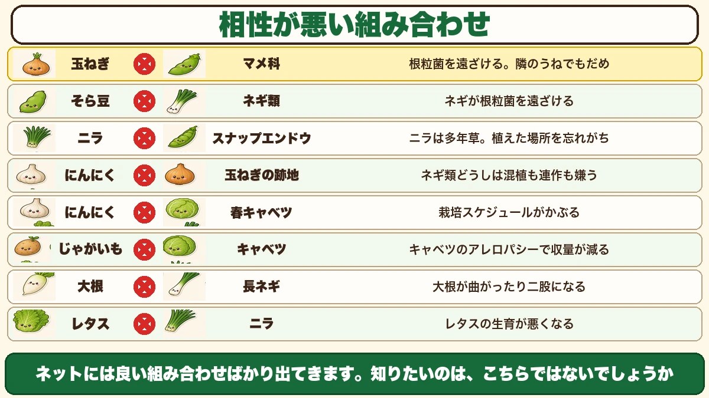
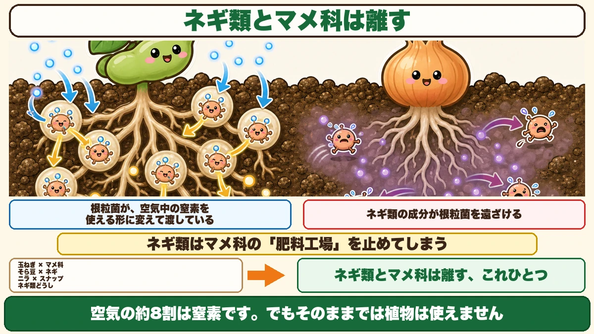
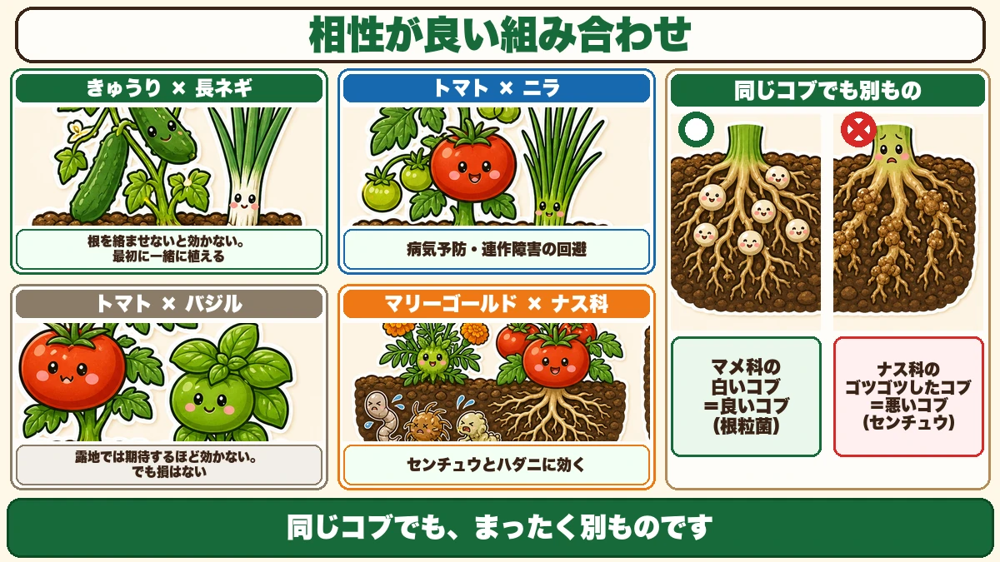
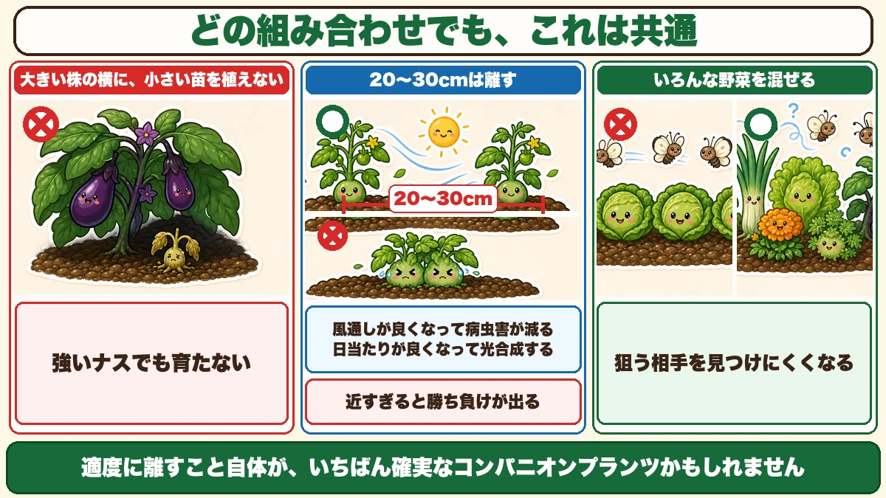

Never plant beans next to onions 🧅 One fact explains half the bad combinations

🧅 "Basil next to tomatoes — I've heard that one."
🧅 "I know the good pairings. What about the bad ones?"
🧅 "Why do my radishes fork?"
Hello, I'm Eiko. Eight years of growing vegetables organically and without pesticides, and a teaching licence in science.
Before the season starts you decide what goes where — and that's when it helps to know which vegetables get on. Plants that help each other, and plants that get in each other's way: companion planting.
One thing struck me while researching it:
There is an enormous amount written about good combinations, and almost nothing about bad ones.
So, the headline:
Don't plant beans next to onions. Not even in the next bed along.
The reason is clear — and once you know it, three other combinations explain themselves at the same time.
First, an honest word
Bad combinations

What this diagram says （図解の文字）
- Onion ✗ legumes — "drives off the nodule bacteria. Even the next bed along is too close"
- Broad bean ✗ onions and leeks — "the allium drives off the nodule bacteria"
- Garlic chives ✗ sugar snap peas — "chives are perennial, and it's easy to forget where you planted them"
- Garlic ✗ ground where onions grew — "alliums dislike both interplanting and following each other"
- Garlic ✗ spring cabbage — the growing seasons collide
① Onion × legumes — the important one
Peas, broad beans, sugar snaps. These do badly with onions.
And this isn't only about interplanting. Growing them near each other is enough — a bed of legumes beside a bed of onions is said to be a bad idea.
So: put something else in the bed next to the onions, and keep the legumes well away.
② Broad bean × onions and leeks
Same family of problem. Alliums drive off the nodule bacteria — explained properly in the next section.
Incidentally, broad beans do well with spinach: after a spinach crop, or between the rows, is said to suit them.
③ Garlic chives × sugar snap peas
Chives are an allium, so the same reason applies. But chives have a trap of their own:
They're perennial. Plant them once and they stay for years — so you forget where they are. You look at a patch, think "that's free", sow peas, and there are chives underground. Make a note of where you put them.
④ Garlic × ground where onions grew
Garlic is actually an excellent companion plant generally — it's said to disinfect the soil simply by growing there, and it suits a wide range of vegetables.
What it doesn't suit is its own relatives. Onion, leek, garlic and garlic chives are all alliums, and alliums dislike both being interplanted with each other and following each other in the same ground.
The explanation given is that alliums release compounds that inhibit other alliums. So don't follow onions with garlic.
⑤ Garlic × spring cabbage
Different reason: the growing seasons overlap completely. Same time, same ground, similar size — so they compete for light, water and nutrients. Not really incompatibility; just not enough room.
⑥ Potato × cabbage
This one's interesting. Cabbage is allelopathic.
Allelopathy is a plant releasing substances from roots or leaves that suppress the plants around it — a plant's way of claiming ground. Cabbage's version is said to slow potatoes down and reduce the yield.
⑦ Radish × leek
A very recognisable symptom. Radishes dislike what leeks release, and respond by bending or forking.
Forking is usually blamed on stones or unrotted manure — but "there was a leek nearby" is a real case too. If you get a bad year for clean radishes, think back to what was growing around them.
⑧ Lettuce × garlic chives
Lettuce is said to grow poorly. The reason isn't clear, but it's worth remembering.
Learn one thing and four make sense

What this diagram says （図解の文字）
- Keep alliums and legumes apart
- "The nodule bacteria convert nitrogen from the air into a usable form and hand it over"
- "Allium compounds drive the nodule bacteria away"
- "Alliums shut down the legume's fertiliser factory"
- onion × legumes ／ broad bean × leek ／ chives × sugar snap ／ allium × allium
- "Keep alliums and legumes apart — that's the only rule you need" ／ "about 80 % of air is nitrogen"
Legume roots have lumps on them
Pull up a pea or a bean and the roots carry a lot of small white lumps.
Not a disease. They're rooms occupied by nodule bacteria.
They make fertiliser out of air
And these bacteria do something remarkable: they take nitrogen out of the air, convert it into a form plants can use, and hand it to the legume.
About 80 % of air is nitrogen — but plants can't use it as it is. Nitrogen fertiliser is precisely that unusable nitrogen converted into a usable form. The nodule bacteria do the same job, in the soil, for free.
Which is why legumes grow on poor ground. They arrange their own supply.
Alliums drive the bacteria away
Here's where it joins up. The compounds released by onions, leeks and chives are said to repel the nodule bacteria.
So:
- The bacteria don't colonise the legume's roots
- The legume can't make its own nitrogen
- On low-fertility ground, it doesn't grow
The allium shuts down the legume's fertiliser factory.
One rule covers four of them
Of the eight above, three are explained by this directly — onion × legumes, broad bean × leek, chives × sugar snap — and the fourth, allium × allium, is the same story about allium compounds.
"Keep alliums and legumes apart." Learn that and half the list takes care of itself. Understand the mechanism and you don't have to memorise anything; you can reconstruct it. Planning the plot got much easier for me after this.
Good combinations

What this diagram says （図解の文字）
- Cucumber × leek — "no effect unless the roots intertwine. Plant them in together from the start"
- Tomato × garlic chives — "disease prevention, and avoiding replant problems"
- Tomato × basil — "outdoors it does less than you'd hope. But there's no harm in it"
- Marigold × the potato family — "works against nematodes and spider mites", "the same lump, a completely different thing"
① Cucumber × leek — the roots must tangle
Plant a leek into the same hole as the cucumber transplant. One point matters: it does nothing unless the roots intertwine.
So they must go in together at planting. Adding a leek later achieves nothing, because the roots never meet.
The idea is that leek roots carry microbes that suppress disease, and you're placing those right next to the cucumber's roots.
② Tomato × garlic chives — against replant problems
Same method: chives into the same hole as the tomato, roots tangled together.
It's said to prevent disease and help with replant problems. Tomatoes are prone to disease when grown in the same place repeatedly, so if your plot is too small to rotate properly, this is worth trying.
③ Tomato × basil — honestly
The famous one. The claim is that basil drinks a lot, so the tomato gets less water and the sugar concentration rises. Tomatoes do sweeten on less water, so the logic holds.
But honestly: outdoors it depends on the weather, and it does less than you'd hope. When it rains, more water arrives than any basil can drink. In a container it has more effect; in open ground it isn't dramatic.
There's no harm in it — just don't count on it for sweetness.
④ Marigold × the potato family
This one clearly works. Marigolds are said to suppress nematodes, and they help against spider mites too.
You discover nematode damage at harvest. Pull up a tomato or an aubergine and the roots are covered in knobbly lumps. Badly affected, the plant can't take up water or nutrients and stops growing.
Note the contrast: the lumps on a legume are good lumps; these are bad ones. Same shape, entirely different thing.
Marigolds beside the tomatoes, aubergines, peppers and potatoes. I do this every year.
Three rules underneath all of it

What this diagram says （図解の文字）
- These hold for every combination
- "Don't put a small transplant beside a large plant" — ✗ "even a tough aubergine won't grow"
- "Leave 20–30 cm" — "too close and one wins, one loses", "better airflow means less pest and disease", "better light means more photosynthesis"
- "Mix different vegetables" — "harder for anything to find its target"
① Don't plant a small transplant beside a big plant
This comes before compatibility. Never put a small transplant next to something already large. Light, water and nutrients all go to the established one. Even a tough plant like an aubergine won't grow in that position.
② Leave 20–30 cm
Even a good combination fails if it's too close. Packed in tight, one wins and one loses.
Aim for 20–30 cm (8–12 in), even for classics like tomato-and-basil or sweetcorn-and-edamame.
And spacing does more than avoid competition:
- Better airflow, so less pest and disease
- Better light, so more photosynthesis
Adequate spacing may be the most reliable companion planting there is.
③ Mix your vegetables up
A way of thinking, this one. A long row of one vegetable is a large signboard for whatever eats it — the smell and the look are unmistakable.
Mix different vegetables and both pests and pathogens have a harder time finding their target.
A home garden doesn't need to grow a lot of any one thing. A little of many — which turns out to be the arrangement best suited to growing without sprays.
Plan it before the season, not during
Leek and chive transplants may not be on sale
Easy to overlook: the leek for your cucumbers and the chives for your tomatoes may simply not be in the shops when you want to plant out.
Worse, sown at the normal time they're too small at the moment you need the effect — by the time they're a decent size, the season is nearly over.
So start them from seed yourself, well ahead. That's the real reason to think about this months before planting.
One trick for sowing
Basil and marigold from seed are very cheap. One thing to know:
Water first, then sow.
Sow first and water after, and the seeds float and drift — fine seed like basil ends up in a heap on one side.
- Fill the pot with seed compost
- Water until it runs out of the bottom
- When it has drained, sow
- Press down lightly. Done
- No watering afterwards
To sum up
- ✅ Little of companion planting is proven science; most of it is experience
- ✅ The internet is full of good pairings. Learn the bad ones
- ✅ Onion × legumes is bad even in the next bed. Keep them apart
- ✅ Broad bean × leek and chives × sugar snap are the same mechanism
- ✅ Chives are perennial — note where you planted them
- ✅ Alliums dislike other alliums, interplanted or in succession
- ✅ Potato × cabbage — cabbage's allelopathy cuts the yield
- ✅ Radish × leek — bent and forked roots
- ✅ Legume root lumps are nodule bacteria converting nitrogen from the air
- ✅ Allium compounds drive them off — shutting down the fertiliser factory
- ✅ Cucumber × leek and tomato × chives need tangled roots, planted together from the start
- ✅ Tomato × basil does less outdoors than advertised, but does no harm
- ✅ Marigold × the potato family works, against nematodes and mites
- ✅ Nematode lumps are bad lumps — not the legume kind
- ✅ 20–30 cm apart, and mix your vegetables up
You don't have to do all of it. If you remember one line, make it this: keep alliums and legumes apart 🧅
Thank you for reading!